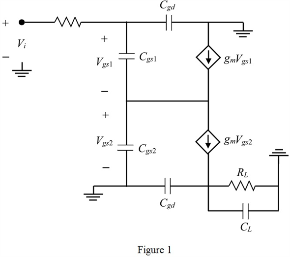

Substitute  for
for  and
and  for
for  to calculate the voltage gain
to calculate the voltage gain
Thus, the mid-band gain is,  .
.
Refer to Figure 9.41 (c) in the textbook for the common drain-common gate amplifier circuit diagram.
Draw the small signal equivalent circuit.

From the circuit in Figure 1, the input voltage is the sum of the gate to source voltage of the MOSFET 1 and gate to source voltage of the MOSFET 2. That is,
The current flowing through the load is, . Therefore, the output voltage is,
Determine the ratio of output voltage to input voltage to get the voltage gain.
Thus, the mid-band voltage gain is,
Substitute for and for to calculate the voltage gain
Thus, the mid-band gain is, .
The pole at the input, with a frequency by neglecting
by neglecting  is,
is,
Here,
The gate to source capacitance, 
The gate to drain capacitance, 
Substitute 2 pF for  and 0.1 pF for
and 0.1 pF for  .
.
The pole at the input, with a frequency is,
is,
Here,
The gate to drain capacitance, 
The load capacitance, 
The load resistance, 
 , 1 pF for
, 1 pF for  , and
, and  for
for  .
.
Write the expression for the frequency at which the gain downs by 3 dB.
Substitute 7.23 MHz for  and 7.23 MHz for .
and 7.23 MHz for .
Thus, the 3 dB frequency is, .